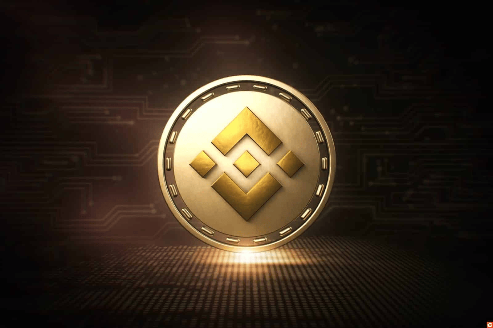
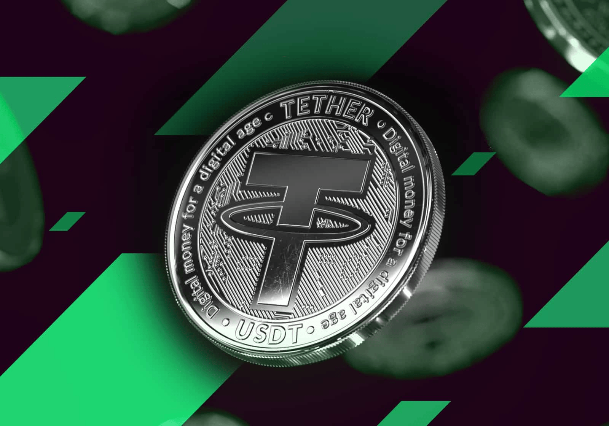

| Bitcoin | Binance | Tether |
|---|---|---|
|  |  | |
| Bitcoin uses peer-to-peer technology to operate with no central authority or banks; managing transactions and the issuing of bitcoins is carried out collectively by the network. Bitcoin is open-source; its design is public, nobody owns or controls Bitcoin and everyone can take part. Through many of its unique properties, Bitcoin allows exciting uses that could not be covered by any previous payment system. https://bitcoin.org/en/ |
Binance is the cryptocurrency exchange founded by Changpeng Zhao and He Yi in July 2017. Binance started with an Initial Coin Offering (ICO) and has since grown into one of the largest global cryptocurrency exchanges, both in terms of volume traded and market share by web traffic. The Binance exchange is separated into the Spot market, Futures market, as well as the decentralized exchange, Binance DEX. https://www.coingecko.com/en/coins/bnb |
Tether tokens are the most widely adopted stablecoins, having pioneered the concept in the digital token space. A disruptor to the conventional financial system and a trailblazer in the digital use of traditional currencies, Tether tokens support and empower growing ventures and innovation throughout the blockchain space. https://tether.to/en/ |
| 4 MILLION PESOS | 32 THOUSAND PESOS | 58 PESOS |